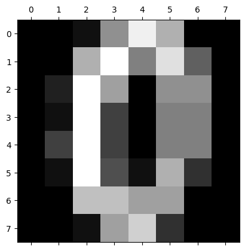
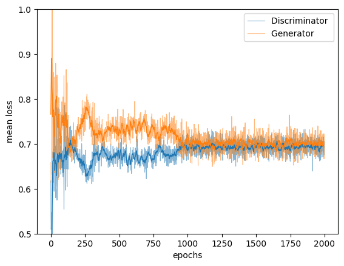
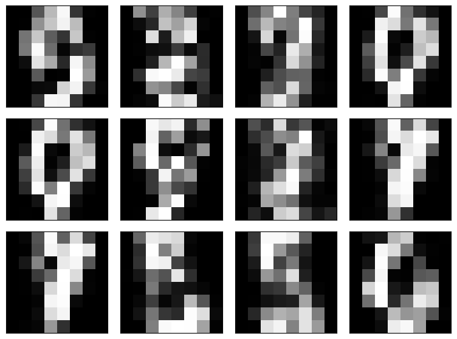

import matplotlib.pyplot as plt
import numpy as np
from tqdm.notebook import trange # just for showing a progress bar
# Import a set of activation functions and their derivatives (specific function hardcoded in the activation layer).
# Note that the tanh function works significantly better than the sigmoid.
from utilities import sigmoidal_function, sigmoidal_derivative
from utilities import tanh_function, tanh_derivative
from utilities import relu_function, relu_derivative
from utilities import leakyrelu_function, leakyrelu_derivative
# Use the same abstract base class as in the previous chapter for the FCN implementation:
from utilities import NNLayer19.5 Generative Adversarial Networks – or: How to Create Data?
19.5.6 Python Implementation
class Gan:
def __init__(self, cost_function, derivative_of_cost):
self.layers_gen = []
self.layers_disc = []
self.cost_function = cost_function
self.derivative_of_cost = derivative_of_cost
def add_layer(self, layer, model):
if model == 'gen':
self.layers_gen.append(layer)
elif model == 'disc':
self.layers_disc.append(layer)
def train(self, X_train, z_dim, epochs, learning_rate, decay, batch):
all_costs = []
progress_bar = trange(epochs)
for epoch in progress_bar:
np.random.shuffle(X_train)
X_train_batch = np.array_split(X_train, int(len(X_train) / batch))
for x_train in X_train_batch:
# 1 - sample the noise vector from a normal distribution
noise = np.random.normal(0, 1, (x_train.shape[0], z_dim))
# 2 - generate 'fake' example by giving noise as input
# to the forward propagation of the generator
fake = noise
for layer in self.layers_gen:
fake = layer.feed_forward(fake)
# 3 - obtain prediction for the fake image
fake_pred = fake
for layer in self.layers_disc:
fake_pred = layer.feed_forward(fake_pred, store_to_memory=True)
# 4 - obtain prediction for the real image
real_pred = x_train
for layer in self.layers_disc:
real_pred = layer.feed_forward(real_pred)
# 5 - we compare the predictions for the real and fake with the reference
# real example --> output of discriminator is 1
# fake example --> output is 0
real_cost = self.cost_function(1., real_pred)
fake_cost = self.cost_function(0., fake_pred)
# the cost function for the discriminator is the mean of the prediction
cost_D = 0.5 * np.mean(fake_cost + real_cost)
# 6 - backpropagate errors from both predictions
real_error = self.derivative_of_cost(1., real_pred)
for layer in reversed(self.layers_disc):
real_error = layer.backward_propagation(
real_error, learning_rate, store_update=True, update_weights=False
)
fake_error = self.derivative_of_cost(0., fake_pred)
for layer in reversed(self.layers_disc):
fake_error = layer.backward_propagation(
fake_error, learning_rate, use_memory=True
)
# 7 - update the generator based on the feedback from the discriminator
# to do so, we want the generator to 'fool' the discriminator
# the discr. should thus output 1 for the fake example instead of 0
cost_G = np.mean(self.cost_function(1., fake_pred))
# 8 - backpropagate errors for the generator
gen_error = self.derivative_of_cost(1., fake_pred)
for layer in reversed(self.layers_disc):
gen_error = layer.backward_propagation(
gen_error, learning_rate, update_weights=False, use_memory=True
)
for layer in reversed(self.layers_gen):
gen_error = layer.backward_propagation(
gen_error, learning_rate
)
progress_bar.set_postfix({'Loss Gen': cost_G,
'Loss Disc real': np.mean(real_cost),
'Loss Disc fake': np.mean(fake_cost)})
all_costs.append([cost_D, cost_G])
learning_rate *= (1 / (1 + decay * epoch))
return np.array(all_costs)
def generate(self, batch, z_dim):
noise = np.random.normal(0, 1, (batch, z_dim))
fake = noise
for layer in self.layers_gen:
fake = layer.feed_forward(fake)
return fakeAdditional, required classes (not printed in the book for brevity)
Define the cost function and its derivative
Do the concrete implementation of a FCL and a AL
The FCL needs to be adapted (as compared to the FCN Layer from the previous chapter) because, e.g., in the feed forward step we now need to decide wether or no to store the value of x for later use.
class FullyConnectedLayer(NNLayer):
def __init__(self, n_inputs, n_outputs, seed=42):
"""Initialize the state of the FC layer.
:param n_inputs: number of input variable (= size of x = number of input neurons)
:param n_outputs: number of output variable (= size of y)
:param seed: Used for seeding the random number generator.
"""
np.random.seed(seed)
# initialize weights and bias values by sampling from in between -0.5 and 0.5
self.weights = np.random.randn(n_inputs, n_outputs)*np.sqrt(2./n_inputs)
self.biases = np.zeros((1, n_outputs))
self.dJdW = 0
self.dJdb = 0
self.state = 0
def feed_forward(self, x, store_to_memory=False):
# `atleast_2d` to ensure that np.dot(self.x.T, dJdy) also works for 1d array from the input layer
self.x = np.atleast_2d(x)
if store_to_memory:
self.state = np.atleast_2d(x)
self.y = np.dot(self.x, self.weights) + self.biases
return self.y
def backward_propagation(self, dJdy, learning_rate,
update_weights=True,
store_update=False,
use_memory=False):
# print("*", self.x.shape, dJdy.shape)
_x = self.x
if use_memory:
_x = self.state
dJdW = np.dot(_x.T, dJdy)
# dJdb = dJdy
dJdb = np.dot(np.ones(self.x.shape[0]), dJdy)
if update_weights:
self.weights -= learning_rate * (dJdW + self.dJdW)
self.biases -= learning_rate * (dJdb + self.dJdb)
if store_update:
self.dJdW = dJdW
self.dJdb = dJdb
dJdy_prev = np.dot(dJdy, self.weights.T)
return dJdy_prev
class LeakyReLULayer(NNLayer):
def __init__(self, alpha):
"""Store the activation function and its derivative for reuse
They are hard-coded as every AL should have the same activation function
"""
self.phi = leakyrelu_function
self.dphidx = leakyrelu_derivative
self.alpha = alpha
self.state = 0
def feed_forward(self, x, store_to_memory=False):
self.x = x
if store_to_memory:
self.state = x
self.y = self.phi(self.x, self.alpha)
return self.y
def backward_propagation(self, dJdy, learning_rate,
update_weights=False,
store_update=False,
use_memory=False):
_x = self.x
if use_memory:
_x = self.state
return self.dphidx(_x, self.alpha) * dJdy
class ReLULayer(NNLayer):
def __init__(self):
"""Store the activation function and its derivative for reuse
They are hard-coded as every AL should have the same activation function
"""
self.phi = relu_function
self.dphidx = relu_derivative
self.state = 0
def feed_forward(self, x, store_to_memory=False):
self.x = x
if store_to_memory:
self.state = x
self.y = self.phi(self.x)
return self.y
def backward_propagation(self, dJdy, learning_rate,
update_weights=False,
store_update=False,
use_memory=False):
_x = self.x
if use_memory:
_x = self.state
return self.dphidx(_x) * dJdy
class SigmoidLayer(NNLayer):
def __init__(self):
"""Store the activation function and its derivative for reuse
They are hard-coded as every AL should have the same activation function
"""
self.phi = sigmoidal_function
self.dphidx = sigmoidal_derivative
self.state = 0
def feed_forward(self, x, store_to_memory=False):
self.x = x
if store_to_memory:
self.state = x
self.y = self.phi(self.x)
return self.y
def backward_propagation(self, dJdy, learning_rate, update_weights=False, store_update=False, use_memory=False):
_x = self.x
if use_memory:
_x = self.state
return self.dphidx(_x) * dJdy
class TanhLayer(NNLayer):
def __init__(self):
"""Store the activation function and its derivative for reuse
They are hard-coded as every AL should have the same activation function
"""
self.phi = tanh_function
self.dphidx = tanh_derivative
self.state = 0
def feed_forward(self, x, store_to_memory=False):
self.x = x
if store_to_memory:
self.state = x
self.y = self.phi(self.x)
return self.y
def backward_propagation(self, dJdy, learning_rate,
update_weights=False,
store_update=False,
use_memory=False):
_x = self.x
if use_memory:
_x = self.state
return self.dphidx(_x) * dJdyUse the smaller handwritten digits dataset:
from sklearn.datasets import load_digits
digits = load_digits()
print(digits.data.shape)
plt.matshow(digits.images[10], cmap='gray')(1797, 64)
# Scale the feature value range to [0, 1]
X = digits.data / 16.
X = X * 2 - 1
# Target variable: One-hot-encoding: map each number of the interval [0,9] to a vector with
# 9 zeros and a one, such that, e.g., 2 is mapped to [0, 0, 1, 0, 0, 0, 0, 0, 0, 0]
Y = digits.target
# mask = np.isin(Y, 0)
# X = X[mask]
print("shape of X_train:", X.shape)
print("shape of Y_train:", Y.shape)
X.shapeshape of X_train: (1797, 64)
shape of Y_train: (1797,)(1797, 64)z_dim = 8
nn = Gan(BCE, dBCE_dy)
nn.add_layer(FullyConnectedLayer(X.shape[-1], 32), 'disc')
nn.add_layer(LeakyReLULayer(0.02), 'disc')
nn.add_layer(FullyConnectedLayer(32, 1), 'disc')
nn.add_layer(SigmoidLayer(), 'disc')
nn.add_layer(FullyConnectedLayer(z_dim, 32), 'gen')
nn.add_layer(ReLULayer(), 'gen')
nn.add_layer(FullyConnectedLayer(32, 48), 'gen')
nn.add_layer(ReLULayer(), 'gen')
nn.add_layer(FullyConnectedLayer(48, X.shape[-1]), 'gen')
nn.add_layer(TanhLayer(), 'gen')
train_gan = nn.train(X, z_dim, epochs=2000, learning_rate=1e-4, decay=1e-5, batch=64)
plt.plot(train_gan[:, 0], label='Discriminator loss')
plt.plot(train_gan[:, 1], label='Generator loss')
plt.legend()
fig, ax = plt.subplots(ncols=1)
ax.plot(train_gan[:, 0], label='Discriminator ', c='C0', lw=0.8, alpha=0.55)
ax.plot(train_gan[:, 1], label='Generator ', c='C1', lw=0.8, alpha=0.55)
ax.plot(running_mean(train_gan[:, 0], 10),lw=1, c='C0')
ax.plot(running_mean(train_gan[:, 1], 10), lw=1, c='C1')
ax.legend()
ax.set(xlabel='epochs', ylabel='mean loss', ylim=(0.5, 1))
generated = nn.generate(12, z_dim)
generated = generated.reshape(-1, 8, 8)
fig, axs = plt.subplots(3, 4, figsize=(9.5, 7), sharex=True, sharey=True,
gridspec_kw={'hspace': 0.11, 'wspace': 0.1})
for i in range(3):
for j in range(4):
axs[i, j].imshow(generated[i*3+j, ...], cmap='gray')
axs[i, j].set(xticks=[], xticklabels=[], yticks=[], yticklabels=[])